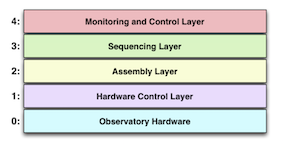

TMT Common Software (CSW)
Common Software is the package of services and infrastructure software that integrates the TMT software systems.
Visit TMT website to know more about Thirty Meter Telescope.
Common Software Architecture
CSW is designed to support the Observing Mode-Oriented Architecture (OMOA). An observing mode is a well-defined instrument observing task and an associated set of owned resources, procedures, and capabilities that implement the mode. An example observing mode is: IRIS multi-filter integral field spectroscopy using the NFIRAOS adaptive optics unit with AO laser guide star correction. An instrument will generally have several associated observing modes for acquisition, science objects, and calibrations. Examples of observing mode resources could be an instrument’s hardware devices, or the use of a larger system such as the Laser Guide Star Facility.
OMOA structures the software as the layers in the following figure. Each layer contains components with specific responsibilities described in the following sections. OMOA bypasses the use of standalone “subsystems” (large principal systems) for a flatter system that requires less code and allows the software system for an observing mode to optionally be more flexibly composed at run-time.

Layer 0 - Obseratory Hardware
Layer 0 represents the actual hardware being controlled and the hardware controllers that interface the hardware to the computer systems.
Layer 1 - Hardware Control Layer
The lowest layer in the OMOA software system, the Hardware Control Layer, consists of all the controllable hardware that is available for use by higher levels of software. A sea of similar software components called Hardware Control Daemons (HCD) at layer 1 controls the low-level hardware of the telescope, adaptive optics, and instruments.
An HCD is similar to the device driver found in many systems. Each HCD is associated with a networked motion controller, a PLC/PAC, or other low-level hardware controller present in Layer 0. Some hardware controllers will support multiple channels. An HCD may support a highly cohesive, related set of functionality. For instance, one motion controller with 8 axes might handle all the slow moving filters and gratings of an instrument. In other cases, the channels of the controller hardware could be associated with unrelated devices. If the hardware controller has multiple channels, the HCD supports access to all the channels and must multiplex access to the controller and coordinate requests and replies among the clients.
Layer 2 - Assembly Layer
The Assembly Layer exists just above the Hardware Control Layer at Layer 2. Software at this layer consists of components called Assemblies. In OMOA, an Assembly represents a device as a collection of hardware that makes sense at the user level. Examples of instrument devices are a filter wheel, a deformable mirror, or a detector controller. Assemblies often represent user-oriented devices in the software system, but it is not necessary that an Assembly control HCDs.
Layer 3 - Sequencing Layer
The Sequencing Layer is Layer 3 in the figure above. Components at this level are called Sequencers or Sequence Components because they take complex descriptions of tasks and control and synchronize the actions of the Assemblies to accomplish the tasks.
Sequence Components in this layer share a software interface that allows them to be plugged together to form the sequencing hierarchy for a specific observing mode. Individual Sequencers can provide higher-level control of a set of distributed hardware (e.g., init). Individual sequencers can be programmable using scripts. There can be one or many Sequence Components in an observing mode sequencer.
Layer 4 - Monitoring and Control Layer
The Monitoring/Control Layer is the layer of software that contains the user interface programs that are used to observe with the telescope. At TMT there will be graphical user interfaces for use by observers during observing. These applications use the CSW services to control and monitor the system.
CSW Services
CSW or Common Software provides a shared software infrastructure based on a set of services and associated software for integrating individual components in the large observatory software architecture. The components and client applications use a set of loosely coupled services, each autonomous with a well-defined interface that hides the service implementation. It also
provides a standardized communication with the services.
Location Service
The Location Service of TMT Common Software handles application, component, and service registration and discovery in the distributed TMT software system. When a component (i.e. an Sequencer, Assembly, or HCD) is initializing, it registers its name along with other information such as interface type and connection information to the Location Service. The important feature and reason for the Location Service is that details of connection information should not be hardwired, they should be discovered at runtime.
Location Service is most obviously needed when one component commands another component. In this case the first component uses the Location Service to get information about the second component, and uses that information to make a connection. Discovered information might include a protocol (e.g., HTTP), interface type (e.g., command), or host and port.
Configuration Service
The Configuration Service (CS) provides a centralized persistent store for “configuration files” used in the TMT Software System. In this context, a configuration file is a set of values describing state, initialization values, or other information useful to a component or set of components. The TCS provides many examples such as look-up tables of various kinds or a set of pointing model parameters or parameters for setting up a motion controller. Another is the Alarm Service Configuration File. At the applications level, the GUI used by the Observing Assistant could provide a button to save offsets between an instrument science field and its acquisition camera origin. These are the kinds of scenarios that use the Configuration Service.
The Configuration Service provides the added feature of storing versions of configuration files. All versions of configuration files are retained providing a historical record of changes for each configuration file. Components can save today’s version without fear that yesterday’s version will be lost. If the configuration of a component is inadvertently lost, it will be possible to easily restore to the most recently saved version or a default version.
Logging Service
Logging is the ability of a software component to output a message, usually for diagnostic purposes. TMT Common Software will provide a Logging Service. Logging should not be confused with “data logging”, which is usually collection of measured values.
This log message includes a time of the log message, a severity (INFO), the source of the log message as a package path in the software, and a formatted text message. The Logging Service provides the ability to log messages locally to a file or screen and optionally to a centralized logging aggregator.
The central logging aggregator (not part of this release) provides the capability for all components to log diagnostic information to a central and optionally persistent store. The logging information is then aggregated and ordered by timestamp. A coordinated, centralized log can be an extremely useful tool for diagnosing many types of distributed software problems. Structured logging will be used with the central logging aggregator.
The Logging Service is unique because it is required early in the lifecycle of a component and most components and CSW services themselves will want the ability to log information. It is often necessary to log messages while a component starts up. This means that the implementation of distributed logging must not depend upon other services (at least if the independence of services is desired). It also means that distributed logging will need to load quickly and provide proper behavior if the aggregating logging capability is needed.
The logging API provides familiar features similar to available logging libraries including logging levels and the ability to dynamically change the component’s logging configuration while the component is executing. This allows the ability to interactively log more detailed messages when a component encounters problems.
Command Service
In the TMT software design, an Application or Sequence Component connects to Assemblies and causes actions by submitting commands. Assemblies connect to and command HCDs. The service that provides the command functionality called the Command Service (CCS).
In TMT, commands require peer-to-peer connections between the component sending a command and the component receiving the command. There is no reason to directly connect to a component unless that component will be commanded. The Location Service provides connection information for components sending commands with CCS.
In the system design each observing mode has a sequencer that consists of one or more OMOA Sequence Components. Commands flow down through the Sequence Components to the Assemblies, HCDs and hardware in a hierarchy.
Framework
The framework provides templates for creating and running the kind of software components defined by TMT as well as service access interfaces for these components. It also provides application support for running multiple components on a host machine.
The framework also contains the structures that are common to components, such as commands and event structures.